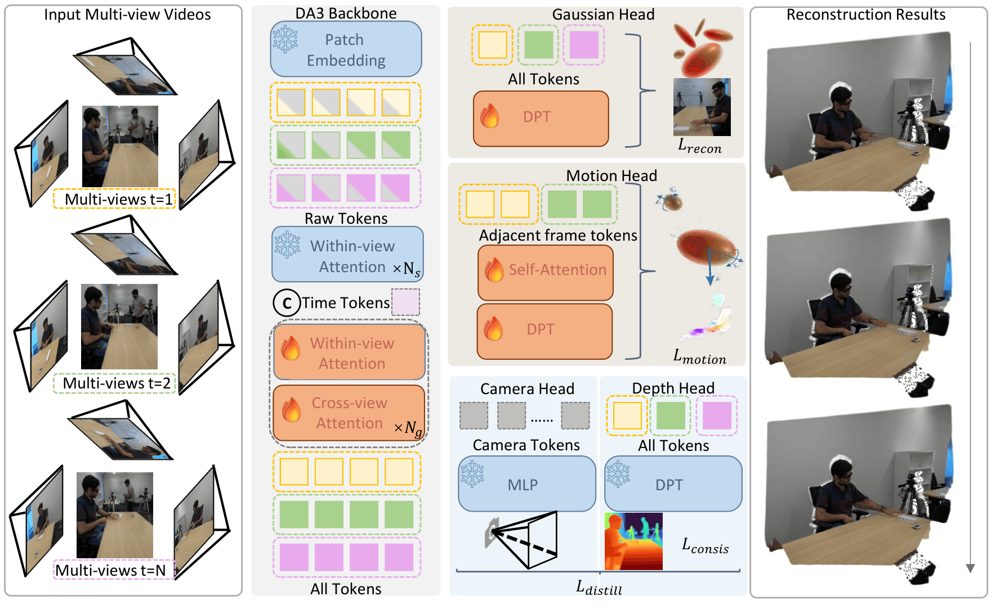

TL;DR: NoPo4D jointly reconstructs moving scenes from multiple uncalibrated video streams in a single step, orders of magnitude faster than traditional optimization-based approaches.
Overview

A pretrained backbone (DA3) encodes multi-view frames; frozen depth and camera heads predict per-frame depth and poses, which are unprojected into 3D Gaussian positions, while a Gaussian head decodes static attributes and a motion encoder decodes dynamics. This design enables three key advantages:
- Pose-free dynamic reconstruction. Gaussian motion is decomposed into 2D image-plane shifts and depth change, supervised directly from pseudo ground-truth optical flow (no camera calibration or 3D motion labels needed).
- Bidirectional motion modeling. A cross-view, cross-frame encoder predicts asymmetric forward and backward velocities, capturing complex scene dynamics.
- View-dependent opacity. SH opacity coefficients suppress unreliable Gaussians from misaligned viewpoints, improving multi-view consistency.
Results
Interactive 4D Viewer
ⓘ To enable real-time rendering in the browser, scenes are reconstructed from 1 camera and 2 frames. Quantitative results in the paper are obtained with the full multi-camera, multi-frame setting.
Comparison
ExoRecon. NoPo4D achieves 29.15 PSNR feed-forward, outperforming all prior baselines.
BibTeX
@misc{balice2026poseproblem4dfeedforward,
title={No Pose, No Problem in 4D: Feed-Forward Dynamic Gaussians from Unposed Multi-View Videos},
author={Matteo Balice and Yanik Kunzi and Chenyangguang Zhang and Matteo Matteucci and Marc Pollefeys and Sungwhan Hong},
year={2026},
eprint={2605.22190},
archivePrefix={arXiv},
primaryClass={cs.CV},
url={https://arxiv.org/abs/2605.22190},
}